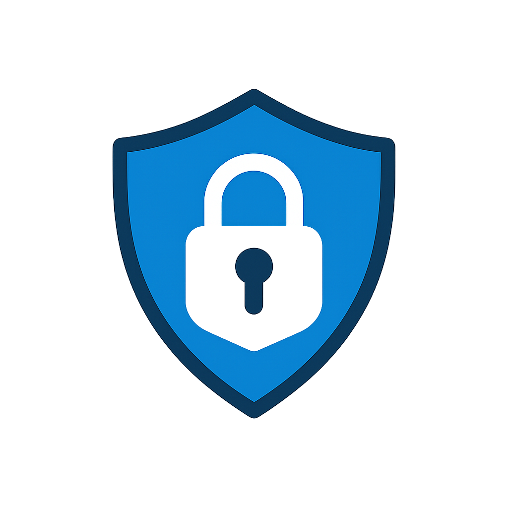

Sensibilisation contre les Cyberattaques
⚠️ Ceci est un test, tu as été piégé
Protégez-vous contre les menaces numériques
La cybersécurité commence par la vigilance. Découvrez comment éviter les pièges les plus courants.
Message de sensibilisation
Les cyberattaques sont de plus en plus fréquentes et sophistiquées.
Les pirates utilisent des courriels frauduleux, des liens piégés et des sites imités pour voler vos informations.
Avant de cliquer sur un lien, assurez-vous toujours de connaître l’expéditeur et de vérifier l’adresse du site.